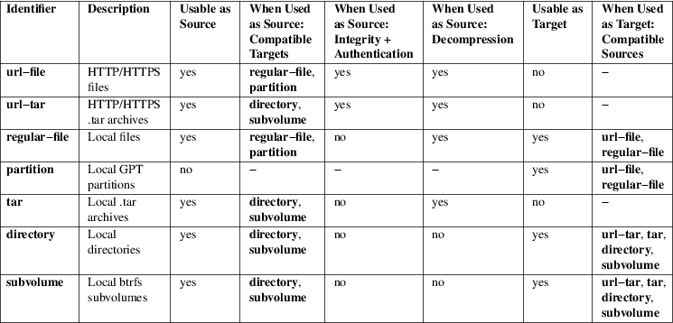

sysupdate.d − Transfer Definition Files for Automatic Updates
/etc/sysupdate.d/*.conf
/run/sysupdate.d/*.conf
/usr/lib/sysupdate.d/*.conf
sysupdate.d/*.conf files describe how specific resources on the local system shall be updated from a remote source. Each such file defines one such transfer: typically a remote HTTP/HTTPS resource as source; and a local file, directory or partition as target. This may be used as a simple, automatic, atomic update mechanism for the OS itself, for containers, portable services or system extension images — but in fact may be used to update any kind of file from a remote source.
The systemd-sysupdate(8) command reads these files and uses them to determine which local resources should be updated, and then executes the update.
Both the remote HTTP/HTTPS source and the local target typically exist in multiple, concurrent versions, in order to implement flexible update schemes, e.g. A/B updating (or a superset thereof, e.g. A/B/C, A/B/C/D, ...).
Each *.conf file defines one transfer, i.e. describes one resource to update. Typically, multiple of these files (i.e. multiple of such transfers) are defined together, and are bound together by a common version identifier in order to update multiple resources at once on each update operation, for example to update a kernel, a root file system and a Verity partition in a single, combined, synchronized operation, so that only a combined update of all three together constitutes a complete update.
Each *.conf file contains three sections: [Transfer], [Source] and [Target].
Disk−image based OS updates typically consist of multiple different resources that need to be updated together, for example a secure OS update might consist of a root file system image to drop into a partition, a matching Verity integrity data partition image, and a kernel image prepared to boot into the combination of the two partitions. The first two resources are files that are downloaded and placed in a disk partition, the latter is a file that is downloaded and placed in a regular file in the boot file system (e.g. EFI system partition). Hence, during an update of a hypothetical operating system "foobarOS" to a hypothetical version 47 the following operations should take place:
1. A file "https://download.example.com/foobarOS_47.root.xz" should be downloaded, decompressed and written to a previously unused partition with GPT partition type UUID 4f68bce3−e8cd−4db1−96e7−fbcaf984b709 for x86−64, as per Discoverable Partitions Specification [1] .
2. Similarly, a file "https://download.example.com/foobarOS_47.verity.xz" should be downloaded, decompressed and written to a previously empty partition with GPT partition type UUID of 2c7357ed−ebd2−46d9−aec1−23d437ec2bf5 (i.e. the partition type for Verity integrity information for x86−64 root file systems).
3. Finally, a file "https://download.example.com/foobarOS_47.efi.xz" (a unified kernel, as per Boot Loader Specification [2] Type #2) should be downloaded, decompressed and written to the ESP file system, i.e. to EFI/Linux/foobarOS_47.efi in the ESP.
The version−independent generalization of this would be (using the special marker "@v" as wildcard for the version identifier):
1. A transfer of a file "https://download.example.com/foobarOS_@v.root.xz" â a local, previously empty GPT partition of type 4f68bce3−e8cd−4db1−96e7−fbcaf984b709, with the label to be set to "foobarOS_@v".
2. A transfer of a file "https://download.example.com/foobarOS_@v.verity.xz" â a local, previously empty GPT partition of type 2c7357ed−ebd2−46d9−aec1−23d437ec2bf5, with the label to be set to "foobarOS_@v_verity".
3. A transfer of a file "https://download.example.com/foobarOS_@v.efi.xz" â a local file /efi/EFI/Linux/foobarOS_@v.efi.
An update can only complete if the relevant URLs provide their resources for the same version, i.e. for the same value of "@v".
The above may be translated into three *.conf files in sysupdate.d/, one for each resource to transfer. The *.conf files configure the type of download, and what place to write the download to (i.e. whether to a partition or a file in the file system). Most importantly these files contain the URL, partition name and filename patterns shown above that describe how these resources are called on the source and how they shall be called on the target.
In order to enumerate available versions and figuring out candidates to update to, a mechanism is necessary to list suitable files:
• For partitions: the surrounding GPT partition table contains a list of defined partitions, including a partition type UUID and a partition label (in this scheme the partition label plays a role for the partition similar to the filename for a regular file).
• For regular files: the directory listing of the directory the files are contained in provides a list of existing files in a straightforward way.
• For HTTP/HTTPS sources a simple scheme is used: a manifest file SHA256SUMS, following the format defined by sha256sum(1), lists file names and their SHA256 hashes.
Transfers are done in the alphabetical order of the .conf file names they are defined in. First, the resource data is downloaded directly into a target file/directory/partition. Once this is completed for all defined transfers, in a second step the files/directories/partitions are renamed to their final names as defined by the target MatchPattern=, again in the order the .conf transfer file names dictate. This step is not atomic, however it is guaranteed to be executed strictly in order with suitable disk synchronization in place. Typically, when updating an OS one of the transfers defines the entry point when booting. Thus it is generally a good idea to order the resources via the transfer configuration file names so that the entry point is written last, ensuring that any abnormal termination does not leave an entry point around whose backing is not established yet. In the example above it would hence make sense to establish the EFI kernel image last and thus give its transfer configuration file the alphabetically last name.
See below for an extended, more specific example based on the above.
Each transfer file defines one source resource to transfer to one target resource. The following resource types are supported:
1. Resources of type "url−file" encapsulate a file on a web server, referenced via a HTTP or HTTPS URL. When an update takes place, the file is downloaded and decompressed and then written to the target file or partition. This resource type is only available for sources, not for targets. The list of available versions of resources of this type is encoded in SHA256SUMS manifest files, accompanied by SHA256SUMS.gpg detached signatures.
2. The "url−tar" resource type is similar, but the file must be a .tar archive. When an update takes place, the file is decompressed and unpacked into a directory or btrfs subvolume. This resource type is only available for sources, not for targets. Just like "url−file", "url−tar" version enumeration makes use of SHA256SUMS files, authenticated via SHA256SUMS.gpg.
3. The "regular−file" resource type encapsulates a local regular file on disk. During updates the file is uncompressed and written to the target file or partition. This resource type is available both as source and as target. When updating no integrity or authentication verification is done for resources of this type.
4. The "partition" resource type is similar to "regular−file", and encapsulates a GPT partition on disk. When updating, the partition must exist already, and have the correct GPT partition type. A partition whose GPT partition label is set to "_empty" is considered empty, and a candidate to place a newly downloaded resource in. The GPT partition label is used to store version information, once a partition is updated. This resource type is only available for target resources.
5. The "tar" resource type encapsulates local .tar archive files. When an update takes place, the files are uncompressed and unpacked into a target directory or btrfs subvolume. Behaviour of "tar" and "url−tar" is generally similar, but the latter downloads from remote sources, and does integrity and authentication checks while the former does not. The "tar" resource type is only available for source resources.
6. The "directory" resource type encapsulates local directory trees. This type is available both for source and target resources. If an update takes place on a source resource of this type, a recursive copy of the directory is done.
7. The "subvolume" resource type is identical to "directory", except when used as the target, in which case the file tree is placed in a btrfs subvolume instead of a plain directory, if the backing file system supports it (i.e. is btrfs).
As already indicated, only a subset of source and target resource type combinations are supported:
Table 1. Resource Types

Both the source and target resources typically exist in multiple versions concurrently. An update operation is done whenever the newest of the source versions is newer than the newest of the target versions. To determine the newest version of the resources a directory listing, partition listing or manifest listing is used, a subset of qualifying entries selected from that, and the version identifier extracted from the file names or partition labels of these selected entries. Subset selection and extraction of the version identifier (plus potentially other metadata) is done via match patterns, configured in MatchPattern= in the [Source] and [Target] sections. These patterns are strings that describe how files or partitions are named, with named wildcards for specific fields such as the version identifier. The following wildcards are defined:
Table 2. Match
Pattern Wildcards
Of these wildcards only "@v" must be present in a
valid pattern, all other wildcards are optional. Each
wildcard may be used at most once in each pattern. A typical
wildcard matching a file system source image could be
"MatchPattern=foobar_@v.raw.xz", i.e. any file
whose name begins with "foobar_", followed by a
version ID and suffixed by ".raw.xz".
Do not confuse the "@" pattern matching wildcard prefix with the "%" specifier expansion prefix. The former encapsulate a variable part of a match pattern string, the latter are simple shortcuts that are expanded while the drop−in files are parsed. For details about specifiers, see below.
This section defines general properties of this transfer.
MinVersion=
Specifies the minimum version to require for this transfer to take place. If the source or target patterns in this transfer definition match files older than this version they will be considered obsolete, and never be considered for the update operation.
ProtectVersion=
Takes one or more version strings to mark as "protected". Protected versions are never removed while making room for new, updated versions. This is useful to ensure that the currently booted OS version (or auxiliary resources associated with it) is not replaced/overwritten during updates, in order to avoid runtime file system corruptions.
Like many of the settings in these configuration files this setting supports specifier expansion. It's particularly useful to set this setting to one of the "%A", "%B" or "%w" specifiers to automatically refer to the current OS version of the running system. See below for details on supported specifiers.
Verify=
Takes a boolean, defaults to yes. Controls whether to cryptographically verify downloaded resources (specifically: validate the GPG signatures for downloaded SHA256SUMS manifest files, via their detached signature files SHA256SUMS.gpg in combination with the system keyring /usr/lib/systemd/import−pubring.gpg or /etc/systemd/import−pubring.gpg).
This option is essential to provide integrity guarantees for downloaded resources and thus should be left enabled, outside of test environments.
Note that the downloaded payload files are unconditionally checked against the SHA256 hashes listed in the manifest. This option only controls whether the signatures of these manifests are verified.
This option only has an effect if the source resource type is selected as url−file or url−tar, as integrity and authentication checking is only available for transfers from remote sources.
This section defines properties of the transfer source.
Type=
Specifies the resource type of the source for the transfer. Takes one of url−file, url−tar, tar, regular−file, directory or subvolume. For details about the resource types, see above. This option is mandatory.
Note that only some combinations of source and target resource types are supported, see above.
Path=
Specifies where to find source versions of this resource.
If the source type is selected as url−file or url−tar this must be a HTTP/HTTPS URL. The URL is suffixed with /SHA256SUMS to acquire the manifest file, with /SHA256SUMS.gpg to acquire the detached signature file for it, and with the file names listed in the manifest file in case an update is executed and a resource shall be downloaded.
For all other source resource types this must be a local path in the file system, referring to a local directory to find the versions of this resource in.
MatchPattern=
Specifies one or more file name match patterns that select the subset of files that are update candidates as source for this transfer. See above for details on match patterns.
This option is mandatory. Any pattern listed must contain at least the "@v" wildcard, so that a version identifier may be extracted from the filename. All other wildcards are optional.
This section defines properties of the transfer target.
Type=
Specifies the resource type of the target for the transfer. Takes one of partition, regular−file, directory or subvolume. For details about the resource types, see above. This option is mandatory.
Note that only certain combinations of source and target resource types are supported, see above.
Path=
Specifies a file system path where to look for already installed versions or place newly downloaded versions of this configured resource. If Type= is set to partition, expects a path to a (whole) block device node, or the special string "auto" in which case the block device which contains the root file system of the currently booted system is automatically determined and used. If Type= is set to regular−file, directory or subvolume, must refer to a path in the local file system referencing the directory to find or place the version files or directories under.
Note that this mechanism cannot be used to create or remove partitions, in case Type= is set to partition. Partitions must exist already, and a special partition label "_empty" is used to indicate empty partitions. To automatically generate suitable partitions on first boot, use a tool such as systemd-repart(8).
MatchPattern=
Specifies one or more file name or partition label match patterns that select the subset of files or partitions that are update candidates as targets for this transfer. See above for details on match patterns.
This option is mandatory. Any pattern listed must contain at least the "@v" wildcard, so that a version identifier may be extracted from the filename. All other wildcards are optional.
This pattern is both used for matching existing installed versions and for determining the name of new versions to install. If multiple patterns are specified, the first specified is used for naming newly installed versions.
MatchPartitionType=
When the target Type= is chosen as partition, specifies the GPT partition type to look for. Only partitions of this type are considered, all other partitions are ignored. If not specified, the GPT partition type linux−generic is used. Accepts either a literal type UUID or a symbolic type identifier. For a list of supported type identifiers, see the Type= setting in repart.d(5).
PartitionUUID=, PartitionFlags=, PartitionNoAuto=, PartitionGrowFileSystem=
When the target Type= is picked as partition, selects the GPT partition UUID and partition flags to use for the updated partition. Expects a valid UUID string, a hexadecimal integer, or booleans, respectively. If not set, but the source match pattern includes wildcards for these fields (i.e. "@u", "@f", "@a", or "@g"), the values from the patterns are used. If neither configured with wildcards or these explicit settings, the values are left untouched. If both the overall PartitionFlags= flags setting and the individual flag settings PartitionNoAuto= and PartitionGrowFileSystem= are used (or the wildcards for them), then the latter override the former, i.e. the individual flag bit overrides the overall flags value. See Discoverable Partitions Specification [1] for details about these flags.
Note that these settings are not used for matching, they only have effect on newly written partitions in case a transfer takes place.
ReadOnly=
Controls whether to mark the resulting file, subvolume or partition read−only. If the target type is partition this controls the ReadOnly partition flag, as per Discoverable Partitions Specification [1] , similar to the PartitionNoAuto= and PartitionGrowFileSystem= flags described above. If the target type is regular−file, the writable bit is removed from the access mode. If the target type is subvolume, the subvolume will be marked read−only as a whole. Finally, if the target Type= is selected as directory, the "immutable" file attribute is set, see chattr(1) for details.
Mode=
The UNIX file access mode to use for newly created files in case the target resource type is picked as regular−file. Expects an octal integer, in typical UNIX fashion. If not set, but the source match pattern includes a wildcard for this field (i.e. "@t"), the value from the pattern is used.
Note that this setting is not used for matching, it only has an effect on newly written files when a transfer takes place.
TriesDone=, TriesLeft=
These options take positive, decimal integers, and control the number of attempts done and left for this file. These settings are useful for managing kernel images, following the scheme defined in Automatic Boot Assessment [3] , and only have an effect if the target pattern includes the "@d" or "@l" wildcards.
InstancesMax=
Takes a decimal integer equal to or greater than 2. This configures how many concurrent versions of the resource to keep. Whenever a new update is initiated it is made sure that no more than the number of versions specified here minus one exist in the target. Any excess versions are deleted (in case the target Type= of regular−file, directory, subvolume is used) or emptied (in case the target Type= of partition is used; emptying in this case simply means to set the partition label to the special string "_empty"; note that no partitions are actually removed). After an update is completed the number of concurrent versions of the target resources is equal to or below the number specified here.
Note that this setting may be set differently for each transfer. However, it generally is advisable to keep this setting the same for all transfers, since otherwise incomplete combinations of files or partitions will be left installed.
If the target Type= is selected as partition, the number of concurrent versions to keep is additionally restricted by the number of partition slots of the right type in the partition table. I.e. if there are only 2 partition slots for the selected partition type, setting this value larger than 2 is without effect, since no more than 2 concurrent versions could be stored in the image anyway.
RemoveTemporary=
Takes a boolean argument. If this option is enabled (which is the default) before initiating an update, all left−over, incomplete updates from a previous attempt are removed from the target directory. This only has an effect if the target resource Type= is selected as regular−file, directory or subvolume.
CurrentSymlink=
Takes a symlink name as argument. If this option is used, as the last step of the update a symlink under the specified name is created/updated pointing to the completed update. This is useful in to provide a stable name always pointing to the newest version of the resource. This is only supported if the target resource Type= is selected as regular−file, directory or subvolume.
Specifiers may be used in the MinVersion=, ProtectVersion=, Path=, MatchPattern= and CurrentSymlink= settings. The following expansions are understood:
Table 3. Specifiers
available
Do not confuse the "%" specifier expansion prefix
with the "@" pattern matching wildcard prefix. The
former are simple shortcuts that are expanded while the
drop−in files are parsed, the latter encapsulate a
variable part of a match pattern string. For details about
pattern matching wildcards, see above.
Example 1. Updates for a Verity Enabled Secure OS
With the following three files we define a root file system partition, a matching Verity partition, and a unified kernel image to update as one. This example is an extension of the example discussed earlier in this man page.
#
/usr/lib/sysupdate.d/50−verity.conf
[Transfer]
ProtectVersion=%A
[Source]
Type=url−file
Path=https://download.example.com/
MatchPattern=foobarOS_@v_@u.verity.xz
[Target]
Type=partition
Path=auto
MatchPattern=foobarOS_@v_verity
MatchPartitionType=root−verity
PartitionFlags=0
PartitionReadOnly=1
The above defines the update mechanism for the Verity partition of the root file system. Verity partition images are downloaded from "https://download.example.com/foobarOS_@v_@u.verity.xz" and written to a suitable local partition, which is marked read−only. Under the assumption this update is run from the image itself the current image version (i.e. the "%A" specifier) is marked as protected, to ensure it is not corrupted while booted. Note that the partition UUID for the target partition is encoded in the source file name. Fixating the partition UUID can be useful to ensure that "roothash=" on the kernel command line is sufficient to pinpoint both the Verity and root file system partition, and also encode the Verity root level hash (under the assumption the UUID in the file names match their top−level hash, the way systemd-gpt-auto-generator(8) suggests).
#
/usr/lib/sysupdate.d/60−root.conf
[Transfer]
ProtectVersion=%A
[Source]
Type=url−file
Path=https://download.example.com/
MatchPattern=foobarOS_@v_@u.root.xz
[Target]
Type=partition
Path=auto
MatchPattern=foobarOS_@v
MatchPartitionType=root
PartitionFlags=0
PartitionReadOnly=1
The above defines a matching transfer definition for the root file system.
#
/usr/lib/sysupdate.d/70−kernel.conf
[Transfer]
ProtectVersion=%A
[Source]
Type=url−file
Path=https://download.example.com/
MatchPattern=foobarOS_@v.efi.xz
[Target]
Type=regular−file
Path=/efi/EFI/Linux
MatchPattern=foobarOS_@v+@l−@d.efi \
foobarOS_@v+@l.efi \
foobarOS_@v.efi
Mode=0444
TriesLeft=3
TriesDone=0
InstancesMax=2
The above installs a unified kernel image into the ESP (which is mounted to /efi/), as per Boot Loader Specification [2] Type #2. This defines three possible patterns for the names of the kernel images, as per Automatic Boot Assessment [3] , and ensures when installing new kernels, they are set up with 3 tries left. No more than two parallel kernels are kept.
With this setup the web server would serve the following files, for a hypothetical version 7 of the OS:
• SHA256SUMS – The manifest file, containing available files and their SHA256 hashes
• SHA256SUMS.gpg – The detached cryptographic signature for the manifest file
• foobarOS_7_8b8186b1−2b4e−4eb6−ad39−8d4d18d2a8fb.verity.xz – The Verity image for version 7
• foobarOS_7_f4d1234f−3ebf−47c4−b31d−4052982f9a2f.root.xz – The root file system image for version 7
• foobarOS_7_efi.xz – The unified kernel image for version 7
For each new OS release a new set of the latter three files would be added, each time with an updated version. The SHA256SUMS manifest should then be updated accordingly, listing all files for all versions that shall be offered for download.
Example 2. Updates for Plain Directory Container Image
[Source]
Type=url−tar
Path=https://download.example.com/
MatchPattern=myContainer_@v.tar.gz
[Target]
Type=subvolume
Path=/var/lib/machines
MatchPattern=myContainer_@v
CurrentSymlink=myContainer
On updates this downloads "https://download.example.com/myContainer_@v.tar.gz" and decompresses/unpacks it to /var/lib/machines/myContainer_@v. After each update a symlink /var/lib/machines/myContainer is created/updated always pointing to the most recent update.
systemd(1), systemd-sysupdate(8), systemd-repart(8)
|
1. |
Discoverable Partitions Specification |
https://uapi-group.org/specifications/specs/discoverable_partitions_specification
|
2. |
Boot Loader Specification |
https://uapi-group.org/specifications/specs/boot_loader_specification
|
3. |
Automatic Boot Assessment |
https://systemd.io/AUTOMATIC_BOOT_ASSESSMENT